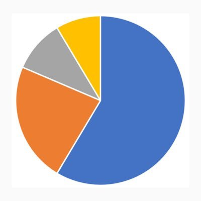

Dunno know about others, but I seriously doubt whether Beijing and Shanghai can be listed among the 20 happiest cities even domestically....

World of Statistics
@stats_feed
Top 20 Happiest Cities in the World, 2025
1.🇦🇪 Abu Dhabi, United Arab Emirates
2.🇨🇴 Medellín, Colombia
3.🇿🇦 Cape Town, South Africa
4.🇲🇽 Mexico City, Mexico
5.🇮🇳 Mumbai, India
6.🇨🇳 Beijing, China
7.🇨🇳 Shanghai, China
8.🇺🇸 Chicago, United States
9.🇪🇸 Seville, Spain
10.🇦🇺